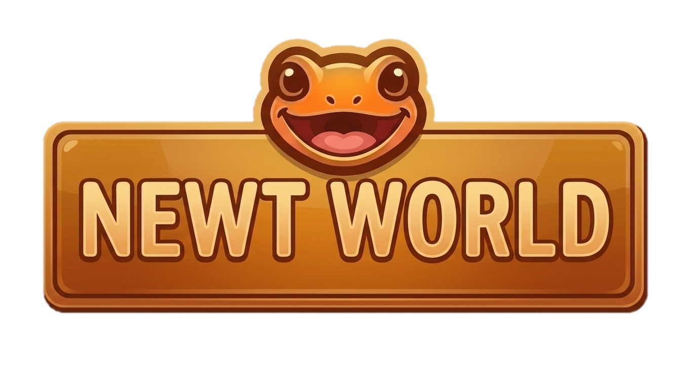

← 생존추첨 선택

탑승자·설정
전체화면
관리자 전용
접기 ▴
ADMIN ONLY
우주탈출(개발중)
회원식별 상태를 확인하고 있어요…
내페이지 · 회원 인증
기존 뉴트월드 관리자 비밀번호
관리자 인증 후 입장
다시 확인
메인으로
NEWTWORLD · 개발중 · 관리자 전용
우주탈출
수직 상승 · 자동 추첨
전체화면 종료
휠 확대·축소
100%
배율 초기화
출격 대기
20척 탑승
탑승 현황
생존
탈락 순서
♫ 음악 켜기
대기 음악
Assault Theme · 기본 대기곡
접기 ▾